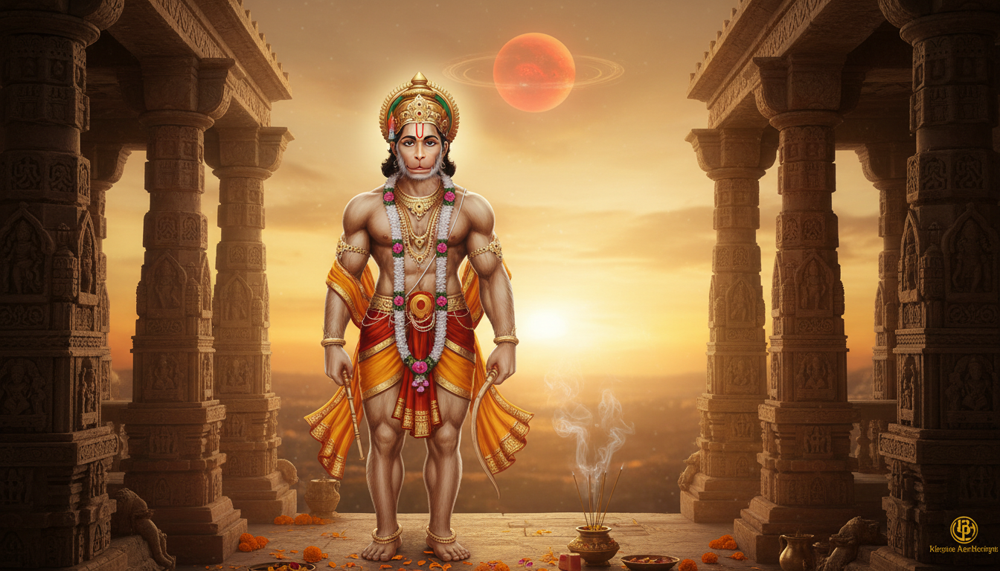

1. Introduction: Redefining the "Mars Curse"
In the sacred science of Jyotish, few terms evoke as much unearned anxiety as Mangal Dosha. Often mislabeled as a "dreaded curse," it is more accurately understood in the Lal Kitab tradition as Agni Rin, or a "debt of fire." It is not a mark of misfortune, but rather a profound concentration of fiery energy that remains unchanneled.

Mars (Mangal) is the celestial commander of energy, courage, passion, and assertiveness. When this energy is imbalanced, it manifests as impulsivity, restlessness, or friction in domestic life. The goal of Vedic remedies is not to "remove" Mars—which would be to strip a person of their drive—but to transform this volatile heat into a constructive force for service, leadership, and protection.
***
TL;DR: THE ESSENTIAL PATH TO HARMONY
- Primary Worship: Daily recitation of the Hanuman Chalisa to refine and align Mars energy.
- Tuesday Protocol: Observe a fast and perform charitable acts specifically during Mars Hora (the planetary hour of Mars).
- Karmic Correction: Voluntarily donate blood to satisfy the "debt of blood" ruled by Mars.
- Behavioral Alchemy: Conscious anger management and physical exercise to release excess heat.
***
2. The Divine Commanders: Who Rules Mars?
To master the fire of Mars, one must seek the grace of the deities who embody its highest expression. The primary rulers are Lord Hanuman and Lord Kartikeya.
Lord Hanuman is the supreme remedy for Mars for several profound reasons:
- The Earth Connection: In Vedic lore, Mars is Bhauma, the "Son of Earth." Lord Hanuman, in his legendary feat of carrying an entire mountain (the earth itself) to save Lakshmana, proves he is the only power capable of effortlessly managing the weight and volatility of Mars's earthly energy.
- The Muscular Soldier: Mars is the "manliest" of planets, ruling over the physical body, muscles, and the spirit of the soldier. Hanuman, the most muscular and powerful of all gods, represents the perfect "manly" commander for this planet.
- Dharmic Refinement: Hanuman represents Mars energy in its most refined form—courageous, disciplined, and utterly devoted. By worshipping him, the practitioner transforms aggressive Mars into a protective force.
Lord Kartikeya, the son of Shiva and commander of the divine army, is also worshipped to instill the discipline required to win internal battles over ego and temper.
3. Devotional Remedies: Mantras and Chants
Vedic mantras are more than sacred words; they are vibrational tools designed to restructure the mental patterns that lead to Mars-induced impulsivity.
The Hanuman Chalisa Practice The most potent daily remedy is the recitation of the Hanuman Chalisa. To be effective, the practice must be consistent:
- Timing: Perform this during the Brahma Muhurta (4:00 AM – 6:00 AM) or at the evening transition (Sandhya).
- Tuesday Intensification: Visit a Hanuman temple. It is essential to offer sindoor (vermillion) and jasmine oil to the deity. To seal the remedy, you must circumambulate the shrine seven times.
| Mantra Type | Mantra Display |
|---|---|
| Simple Hanuman Mantra | Om Hanumate Namah |
| Mars Beej Mantra | Om Kraam Kreem Kraum Sah Bhaumaya Namah |
| Lal Kitab Daily Mantra | Om Angarakaya Namah |
Note: These mantras are intended to shift the mind from a state of reactive aggression to one of peaceful potency.
4. Karmic Balancing: Fasting and Charitable Acts
Fasting and charity serve as "karmic remedies" that balance challenging planetary influences through self-discipline and the generation of merit.
Tuesday Fasting Protocol Fasting develops control over the impulsive urges ruled by Mars. Choose a level suited to your capacity:
- Complete Fast: Only water from sunrise to sunset.
- Partial Fast: Avoiding grains; one vegetarian meal after sunset.
- Fruit Fast: Consuming only fruits and milk.
- Modified Observance: Strictly avoiding non-vegetarian food, alcohol, and tobacco on Tuesdays.
Traditional Tuesday Donations Donating items associated with Mars helps satisfy the "debt of fire." For maximum efficacy, these donations should be made during Mars Hora (refer to a Panchang for the specific hour on Tuesdays).
- Red Lentils (Masoor Dal): The primary grain linked to Mars's frequency.
- Jaggery (Gur): Adds sweetness to the "heat" of Mars.
- Red Cloth & Copper Vessels: Metals and colors that resonate with the planet.
- Wheat: A fundamental grain used to feed the needy.
Modern Remedy: Blood Donation Mars rules the blood. In the modern age, voluntarily donating blood is considered one of the most powerful remedies for Mangal Dosha. It fulfills the karmic "debt of blood" through a courageous, life-saving act of service.
5. Physical and Behavioral Alchemy (The Lifestyle Approach)
Rituals provide the spiritual foundation, but lifestyle changes provide the daily discipline required to cool the Mars energy:
- Anger Management: Practice the "count to ten" rule. Use evening reflection to analyze your emotional reactions and identify triggers.
- Physical Channeling: Engage in martial arts, strength training, or sports. Mars energy cannot be suppressed; it must be used. Physical exertion prevents this heat from exploding as anger.
- Relationship Discipline: Practicing patience is a spiritual necessity. Avoid using insulting or harsh language, as every verbal "fire" fuels the dosha.
- Environment: Keep your kitchen and stove spotlessly clean. As the seat of fire in the home, the kitchen's energy directly influences the resident's Mars.
- Respect for Mentors: Honor your elder brothers and male mentors. This practice humbles the "fire of ego" and turns Mars toward a spirit of protection.
6. The Tools of the Trade: Gemstones, Rudrakshas, and Roots
Specific natural tools can be used to strengthen or pacify Mars, but they require a consultant's precision.
Red Coral (Moonga) CRITICAL WARNING: Red Coral should never be worn if Mars is already strong or aggressive in your birth chart. Doing so can dangerously intensify anger and conflict. It is only for those whose Mars is weak, debilitated (in Cancer), or unable to provide drive.
- Procedure: If recommended, wear a natural stone in gold or copper on a Tuesday during the Shukla Paksha (waxing moon) on the right-hand ring finger after 108 mantra repetitions.
Gentle Aids
- 3 Mukhi Rudraksha: Represents Agni (fire) and helps in purifying the mind's impulsivity.
- Anantmool (Root): A gentle herbal alternative that balances Mars energy without the intensity of a gemstone.
7. Ritualistic Solutions for Severe Cases
For high-intensity Mangal Dosha, formal Vedic ceremonies can satisfy deep karmic patterns.
- Mangal Shanti Puja: This comprehensive ceremony typically lasts 3 to 5 hours. It involves Kalash Sthapana (consecration of the sacred water pot), a Havan (fire offering), and the recitation of 10,000 Mars mantras by a qualified priest.
- Kumbh Vivah: A symbolic marriage to a clay pot (kumbh), tree, or an idol of Lord Vishnu. This ritual is designed to "absorb" the initial karmic intensity of Mars before a human marriage occurs.
- Pilgrimage Sites: Three locations are paramount for Mars relief:
- Mangalnath Temple (Ujjain): Renowned as the legendary birthplace of Mars.
- Vaitheeswaran Koil (Tamil Nadu): Dedicated to Shiva as the divine healer of Mars afflictions.
- Angaraka Temple (Tamil Nadu): A primary site for dosha relief.
8. Conclusion: The Timeline of Transformation
The transformation of your "fire" requires consistency and faith. According to the Lal Kitab tradition, practitioners can expect a specific timeline of results:
- Within 15 Days: An emerging sense of mental calm and reduced irritability.
- Within 43 Days: A visible softening in relationship dynamics and improved decision-making.
- Within 90 Days: A substantial shift in life circumstances and deep relationship harmony.
A Manglik person is not cursed. Once the "debt of fire" is managed through devotion and discipline, that same fire becomes the source of the courage needed to lead, build, and protect. Your energy is a divine gift—you were born to be a commander of your own destiny.
Sources
- Decoding Mars and Manglik Dosha: A Celestial Guide - AstroSight - AI Vedic Astrology
- FACT SHEETS-Aries (Mesha Rashi) – astrosutras.in
- Doshas - Remedies for Mangal Dosha: Effective Solutions for Marriage
- The Hanuman Chalisa For Difficult Times - Light on Vedic Astrology
- Chapter 3: Karm Yog - Bhagavad Gita, The Song of God – Swami Mukundananda
- Managing Anger Like Arjun – Timeless Bhagavad Gita Lessons for Inner Peace & Emotional Mastery - Radha Krishna Temple of Dallas
- Mangal (Mars): The Planet of Energy, Courage, and Action
- Mangala (Mars) in Indian Culture: Legends, Astrology & Worship - Exotic India Art
- Manglik Dosha Explained: Complete Guide to Mars Effects - AstroSight
- Mangal Puja, Mantra and Remedies - Mars - AstroSage
- How to Get Rid of Mangal Dosha Naturally and Spiritually
- Lal Kitab remedies to Handle Manglik Dosha - templeofhope.in
- who's the boss: real rulers of planets - Honest Astrologer
- SRIMAD BHAGAVAD GITA – PART 14 Chapter 3, Verses 31 to 43 – KARMA YOGA
- Bhagavad Gita – Short notes on gita – Chapter 3 – Karma Yoga - Vedanta Students
- The 12 forms of a Graha based its 12 Rasi positions: Part 2 | by Varaha Mihira - Medium
- Effects of Mars in Saravali Astrology | PDF - Scribd
- Ruchaka Yoga: Mars Power for Courage & Success | AstroSight
- Mars in 2nd House: Wealth, Speech & Family Dynamics | Vedic Astrology Guide - AstroFusion
- Understanding Hanuman Through the Lens of Astrology - Omega Astro
- Mars in Third House - AstroSage
- Bhagavad Gita Verse 62-63, Chapter 2
- Bhagavad-gītā As It Is 2.63 - Vedabase
- Chapter Two: The Working of the Sex Impulse
- what is the deep meaning of this Gita quote? - Hinduism Stack Exchange
- Yoga Module for Adolescent Anger Management | PDF | Asana - Scribd
- Facing Fears: Lessons from India | PDF - Scribd
- Embracing Fearlessness: Lessons from Gita | PDF | Devi | Bhagavad Gita - Scribd
- Lost Masters: the Ancient Greek Philosophers - Integral Yoga Teachers Association
- Hanuman Ji: Stories, Mantras and Symbolism of Devotion - Exotic India Art
- Hanuman - Wikipedia
- The Story of Hanuman - Durham University
- February 2017 - Hindu Temples
- A Divine Glimpse on Bada Mangal – Shri Late Hanuman Ji of Prayagraj : r/hinduism - Reddit
- March 2018 - AstroSage Magazine
- Dashavatara - Wikipedia
- BRIHAT PARASHARA HORA SHASTRA Vol 1 - En'gI Isht Rans I A Tion, C Ommenlary, Annotation and Editing by R. SANTHANAM | PDF | Astrology - Scribd
- Kuja Dosha - WordPress.com
- Gallery | RN213: Hindu Posters - Boston University
- Ashta Siddhi Hanuman: The Divine Warrior of Faith - Where devotion transforms into divine strength. - Astropuja
- BG 2.63: Chapter 2, Verse 63 - Bhagavad Gita, The Song of God – Swami Mukundananda
- Bhagavad Gita Chapter 3 - Karma Yoga: The Path
- Vedanta – Swami Vedatitananda - WordPress.com
- What is Lord Hanuman's relation with Mars or Mangal Grah? : r/Astrology_Vedic - Reddit
- Zodiac signs who are spiritually connected with Lord Hanuman - The Times of India
- What is Mangal Dosha? Ways to reduce the impact? - The Times of India
- Bhagwad Gita Slokas 2.62 & 2.63 - The Yoga Institute
- Full text of "Brihat Parashara Hora Shastra" - Internet Archive
- Navagraha secrets in the Ramayana: What each planet teaches us through the epic - The Times of India
- Parasara Sastra Hora
- Full text of "Brihat Parāśara Horā Śhāstra By R. Santhanam" - Internet Archive
- (PDF) Advaita & Jesus - ResearchGate
- Chapter 18 - Vedanta Students
- Light on Pral)ayama - Mantra Yoga Meditation School
- Mind–Its Mysteries and Control - The Divine Life Society
- The Art Of Positive Thinking
- Yama, Niyama, Brahmacharya - Yoga Magazine
- Mars in Aries - AstroSage
- Evil Vrittis and Their Eradication - Sivanandaonline.org
- The Bhagavad Gita For Awakening
- The Skanda Purana 23 Parts in Set (AITM Vol. 49 To 71) - Motilal Banarsidass
- Did Lord Rama really worship Lord Shiva? - Hinduism Stack Exchange